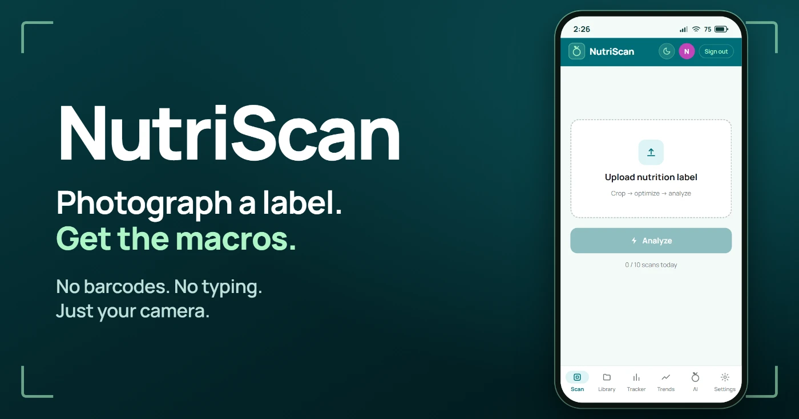
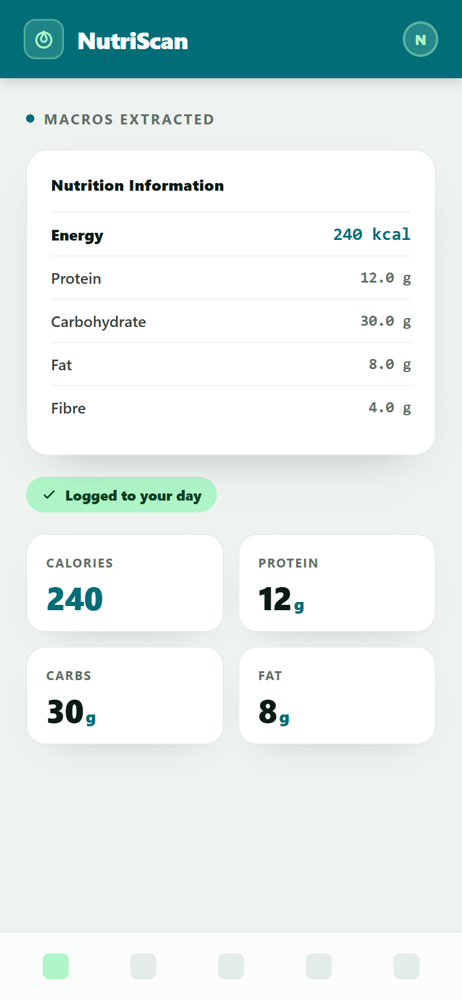

NutriScan
Photograph a nutrition label and it becomes tracked macros: AI vision reads the calories, protein, carbs, fat and fibre straight off the packet. No barcode database, no manual typing. Around that sits a full tracker: daily goals, a food library, one-tap meal templates, weekly trends, and an AI assistant that already knows your log.
The scan pipeline
Images are prepared in the browser before they ever leave the phone: a touch-friendly canvas cropper isolates the label, then the image is resized and grayscaled for smaller uploads, faster scans, and cheaper AI calls. Gemini 2.5 Flash reads the label, with automatic fallback to 2.0 Flash if the primary model fails, and the response is parsed and normalized into clean macros (kcal · protein · carbs · fat · fibre) before anything is shown or logged.
Auth without passwords
- ✗No passwords, ever: sign in with Google OAuth or a 6-digit emailed code. Nothing to store, leak, or reset
- ✓Verified, not trusted: ES256 JWTs are checked server-side against Supabase's JWKS on every request
- ✓Isolated at the storage layer: each request binds the user to the database session, and row-level security policies do the rest. App bugs can't read another user's rows
- ✓Deletable: full account deletion is a first-class Settings action
F-01Row-level security everywhere
All 11 tables carry per-user RLS policies, so isolation is enforced by Postgres itself, not by remembering a WHERE clause in every query.
F-02Vision with a fallback
Gemini 2.5 Flash is the primary label reader; if it errors, the scan retries on 2.0 Flash automatically. Users see macros, not model outages.
F-03Context-aware AI assistant
A Groq-powered chat tab that's fed today's log, remaining macros and 7-day averages. Multi-turn, with server-side safety guardrails.
F-04Meal templates
Multi-select foods from the library into a named template, then log an entire breakfast in one tap instead of four.
F-05Real push notifications
VAPID web push with per-user preferences: goal alerts, meal reminders and a weekly summary, each at a time the user picks.
F-06User-controlled PWA updates
New versions don't force-reload mid-log: a banner shows exactly what changed (from a versioned changelog) and the user applies it when ready.
F-07Trends without a chart library
The 7-day trends tab renders its charts as raw SVG: no charting dependency, full control over the visuals, smaller bundle.
F-08Cost-capped by design
A 10-scans-per-day limit per account keeps the vision API bill bounded while staying generous for real daily use.


Scan to open NutriScan
Point your phone camera at the code to launch the live app instantly: no install needed, it runs as a PWA you can add to your home screen. Every account gets 10 free scans a day.
nutritional-tracker-delta.vercel.app github.com/MrTig-afk/NutritionalTracker